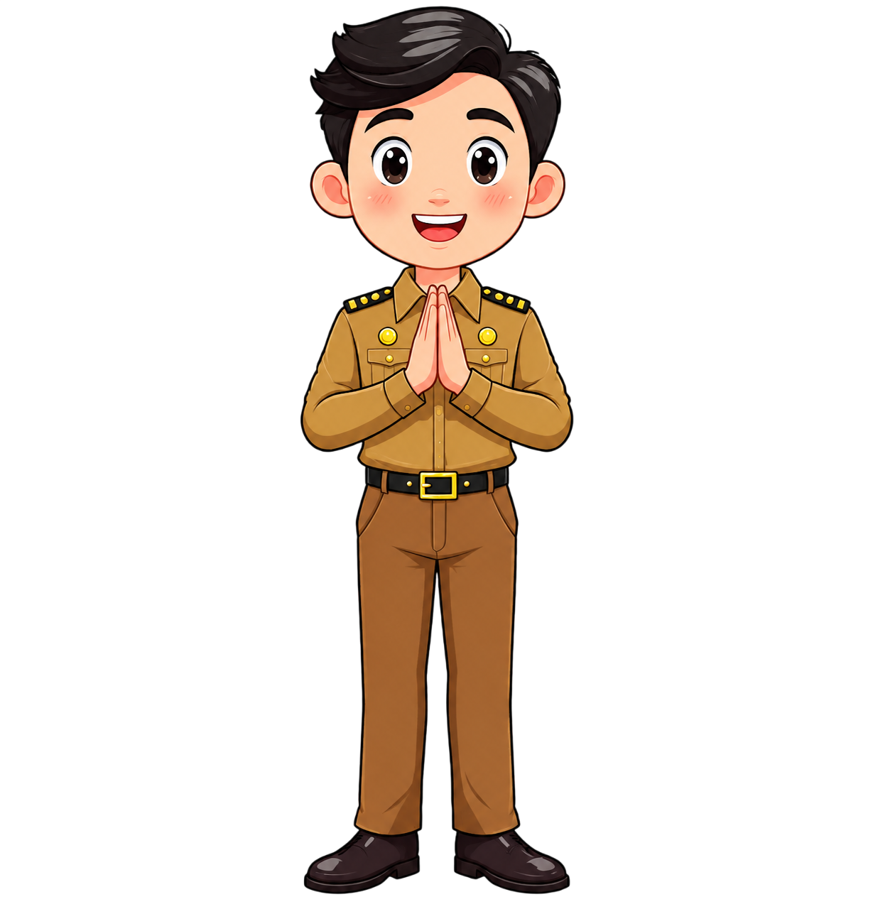

Masukkan PIN rahasia untuk membukanya.
Petunjuk: tanggal Hari Guru Nasional, format DDMMYY 😉
Dulu kami datang dengan tangan kosong dan belum bisa apa-apa. Lewat bimbingan Ibu dan Bapak, kami belajar, salah, mencoba lagi, lalu akhirnya siap bekerja dan berkarya.
Ketuk aku untuk pesan rahasia 🤫
Setelah ujian dadakan dan semua cerita kelas, sekarang giliran Ibu dan Bapak yang memberi nilai. Kali ini, siswa yang akan dinilai.
Jawab sesuai pengalaman Bapak. Bebas.
Nilai kelulusan untuk Pak Fatkur: A+++
Terima kasih sudah membimbing kami dari belum bisa apa-apa sampai siap kerja dan berkarya. 💛